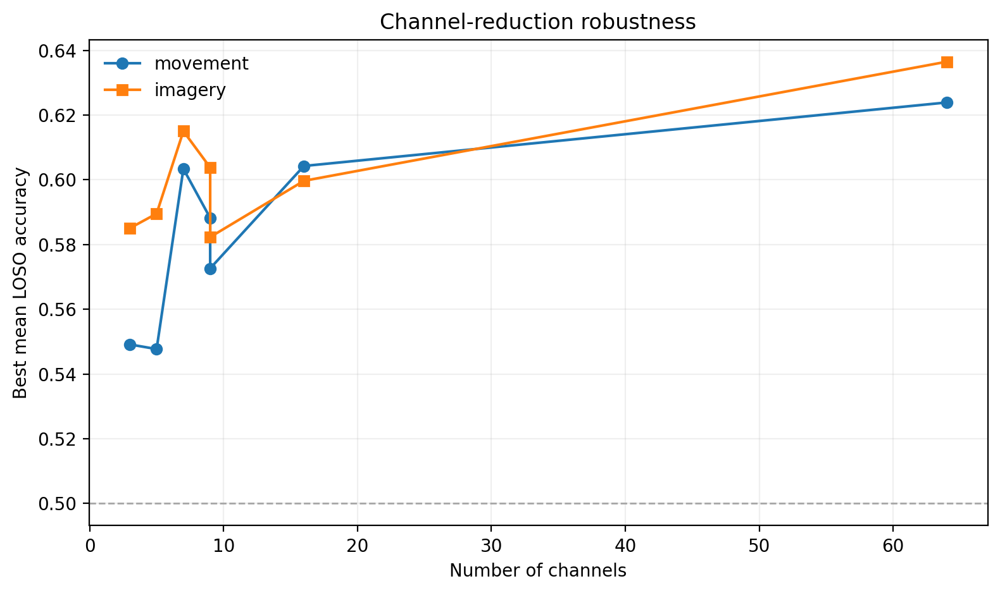

Independent research · Researcher · 2026
Resource-constrained
EEG motor classification
How well can lightweight classifiers distinguish left- and right-fist movement—and imagined movement—in people they haven’t seen before?
Why it matters
Brain–computer interfaces must work within real constraints: fewer electrodes, shorter decision windows, limited calibration, and noisy signals. Accuracy is only part of the problem.
What I did
I designed and implemented the benchmark, built the EEG preprocessing pipeline, ran the statistical analyses, and prepared the visualizations and manuscript.
Technical methods
Band power, Hjorth parameters, wavelet energy, common spatial patterns (CSP), and filter-bank CSP, paired with shrinkage linear discriminant analysis. Leave-one-subject-out evaluation measures transfer to unseen participants; further experiments test calibration, channel reduction, short windows, and simulated artifacts.
Python · MNE · NumPy · pandas · SciPy · scikit-learn · PyWavelets · Matplotlib · Jupyter

Analysis complete · Manuscript draftedOffline benchmark; prepared for faculty feedback.